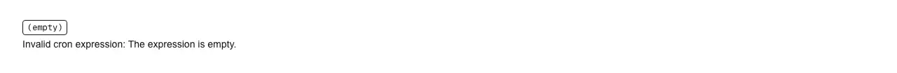

Turns a cron expression into a sentence anyone can read, and lists the next times it fires. Reach for it wherever a schedule is shown rather than edited: a scheduled-jobs table in an admin panel, the summary line under a cron input, backup and report-delivery settings, sync and webhook retry schedules, a CI/CD or deploy cadence, a GitHub Actions / Vercel Cron / Cloudflare Workers Triggers schedule rendered in your own dashboard, or the live preview beside a cron builder. Common asks it answers: "cron to human readable react", "explain a cron expression", "crontab parser component", "describe cron in plain English", "next run time from a cron expression", "cron preview shadcn", "validate a cron expression in a form", "what does 0 9 * * 1-5 mean". It handles the parts a hand-rolled parser gets wrong. The day-of-month and day-of-week fields are ORed when neither is a literal star and ANDed when either one is — so 0 0 13 * 5 runs on the 13th OR on every Friday, not only on Friday the 13th, and 0 0 13 * 0-6 runs every single day even though 0-6 covers the same seven days a star does. That rule is cron's oldest trap, it keys off syntax rather than coverage, and the component both applies it and says so on screen when it is in play. Sunday is both 0 and 7, and the fold happens after a range is expanded, so 5-7 means Friday, Saturday and Sunday instead of collapsing into a backwards range. Ranges, lists, steps, */n, a-b/n, the n/step shorthand, three-letter month and weekday aliases in any position, and the @daily / @hourly / @weekly / @monthly / @yearly / @midnight nicknames all parse; @reboot is reported as having no calendar schedule rather than being invented one; a six- or seven-field expression is named as Quartz/Spring syntax rather than dismissed as invalid, and L, W and # are named as Quartz extensions. Next runs are computed in UTC — the zone GitHub Actions, Vercel Cron and Cloudflare Triggers all schedule in — by stepping whichever field fails rather than a minute at a time, so an expression that only matches on February 29 costs a few thousand comparisons instead of two million, and one that can never match (February 30) ends empty instead of hanging. Run times are formatted without Intl, because a locale-dependent string renders differently on the server and in the browser and turns into a hydration mismatch; pass formatRun to localise it yourself. Nothing reads the clock, so the same props always produce the same markup. An invalid expression is reported inline, in words as well as in colour, with the field and token that failed — conveying state by colour alone fails WCAG 1.4.1 — and the parse helpers (parseCron, describeCron, nextCronRuns) are exported so the same expression can be validated in a form before it is saved. No dependencies and no hooks, so it renders inside a React server component with no 'use client' of its own and ships no client JavaScript. Official shadcn/ui has nothing for scheduling: calendar is a date picker built on react-day-picker, and progress is a bar with no notion of recurrence.

Rendered on the shadcn default neutral palette with harness-generated props.
pnpm dlx shadcn@4.21.0 add @pulld/cron-expression
| licence | POINTER |
|---|---|
| primitive base | none |
| type | registry:ui |
| files | src/components/ui/cron-expression.tsx |
| npm deps pulled | none beyond the pre-installed peer set |
| registry deps | — |
| semantic / palette / hex | 11 / 0 / 0 |
| writes shared ui/ | yes — can overwrite the project’s own primitives |